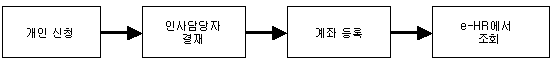
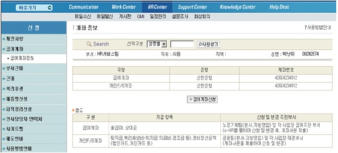
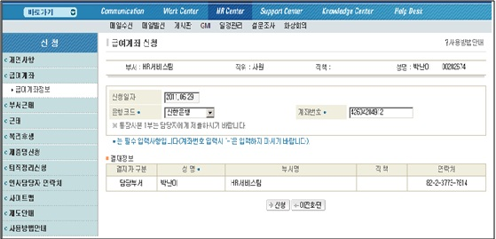

|
개요 및 신청절차 | |
 |
개요 | |
| 개인이 급여계좌를 변경 또는 신규 신청하고 인사담당자가 결재하면 급여계좌가 등록되고, 개인은 Global HR Portal에서 변경사항을 조회한다. |
||
|
절차 | |
|  |
 |
화면사용법 및 유의사항 | |
| <그림 1. 계좌정보 조회 화면> | ||
|  | ||
| 1) 급여계좌와 개인F/B계좌를 조회하고, 급여계좌신청 버튼을 클릭하여 급여계좌에 대해 변경신청 가능 | ||
| 하다. | ||
| <그림 2. 급여계좌 신청 화면> | ||
|  | ||
| 1) 변경할 급여계좌의 은행과 계좌번호를 입력하고 신청한다. | ||
| 2) 변경할 계좌의 사본을 인사부서로 송부한다. | ||
| 3) 인사담당자가 사본을 확인하고 결재를 하면 계좌가 변경된다. | ||
| 4) 변경된 계좌 내용은 HR Center의 동 화면에서 확인한다. | ||
 |
제출서류 | |
| 1) 은행이나 증권회사의 통장(증권카드) 사본 | ||